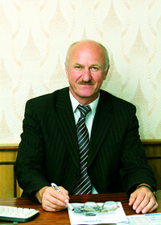

 Факультет автоматизированных и информационных систем (ФАИС) был образован 7 апреля 1999 г. на базе факультета
автоматики и электромеханики
Деканом ФАИС был назначен канд. тех. наук, доц. Селиверстов Г.И. В состав факультета вошли кафедры «Промышленная
электроника», «Автоматизированный электропривод», «Информационные технологии», «Высшая математика», «Физика»
(была выведена из состава ФАИС в 2004 г.).
За факультетом была закреплена подготовка специалистов по специальностям «Промышленная электроника» и «Автоматизированный
электропривод» (с 2002 года – «Автоматизированные электроприводы»). Но современные требования народного хозяйства
Республики Беларусь расширили спрос на специалистов в области телекоммуникационных и информационных технологий.
В связи с этим, в апреле 2005 года Министерство образования Республики Беларусь дало разрешение на подготовку
в университете студентов по специальности «Информационные системы и технологии» направления «Информационные системы
и технологии (в проектировании и производстве)», а в мае 2005 года – по специализации «Техника и средства электронной
связи» специальности «Промышленная электроника». С 2005 года на факультете началась подготовка специалистов по
открытой специализации и с 2006 года – по открытому направлению. С 1 сентября 2014 года на факультете началась
подготовка студентов по двум новым специальностям «Информационные технологии и управление в технических системах»
(кафедра «Промышленная электроника») и «Информатика и технологии программирования» (кафедра «Информатика»).
Сегодня в состав факультета входят четыре выпускающие кафедры «Промышленная электроника», «Автоматизированный
электропривод», «Информационные технологии», «Информатика» и одна общеобразовательная – «Высшая математика».
XXI век – век стремительного развития компьютерных технологий и если говорить о перспективах, то факультет находится
в постоянном развитии. Растет контингент студентов, совершенствуется и обновляется материальная база факультета,
включающая современные компьютерные классы, новое лабораторное оборудование, учебное, методическое и информационное
обеспечение учебного процесса. В июне 2011 года открыта научно-исследовательская лаборатория «Электротехника
и электромеханика» на базе кафедры «Автоматизированный электропривод». В феврале 2014 года при кафедрах факультета
открыты учебно-исследовательские лаборатории: при кафедре «Информационные технологии» – прикладного и системного
программирования, при кафедре «Автоматизированный электропривод» – электромеханических систем и приводов, при
кафедре «Промышленная электроника» – «Радиолюбитель». Открываются и филиалы выпускающих кафедр на предприятиях
для усиления практической подготовки студентов.
Личная страница
Грищенко Дениса Петровича